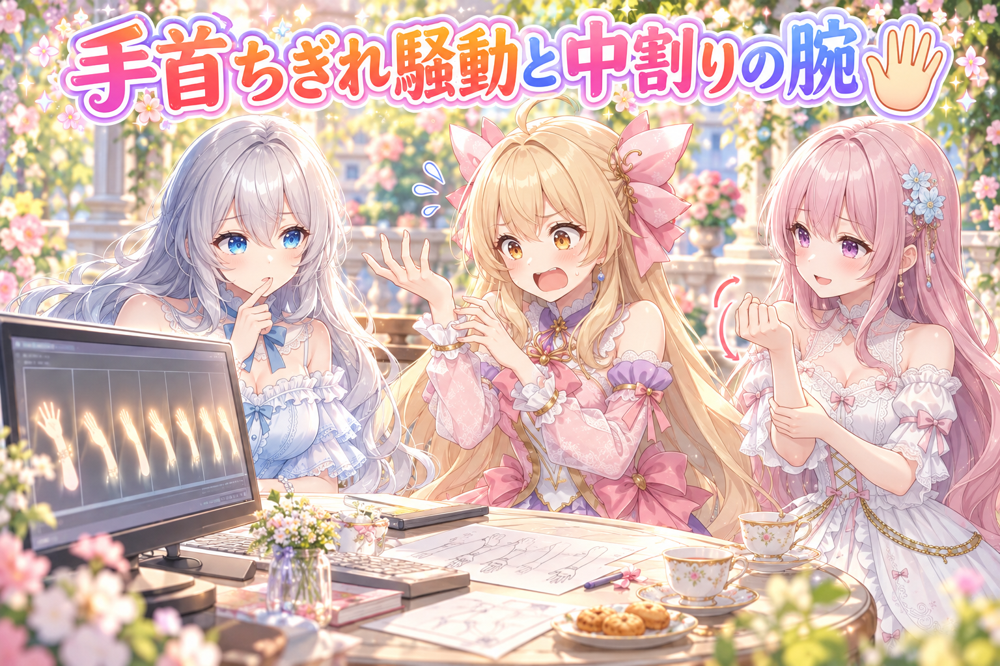
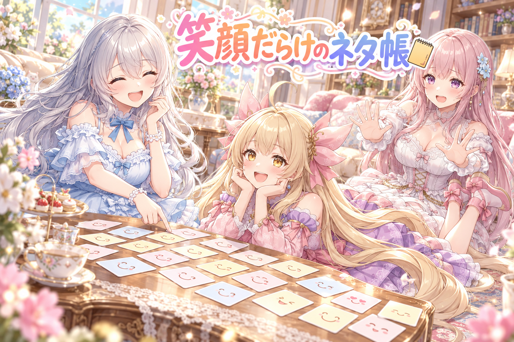
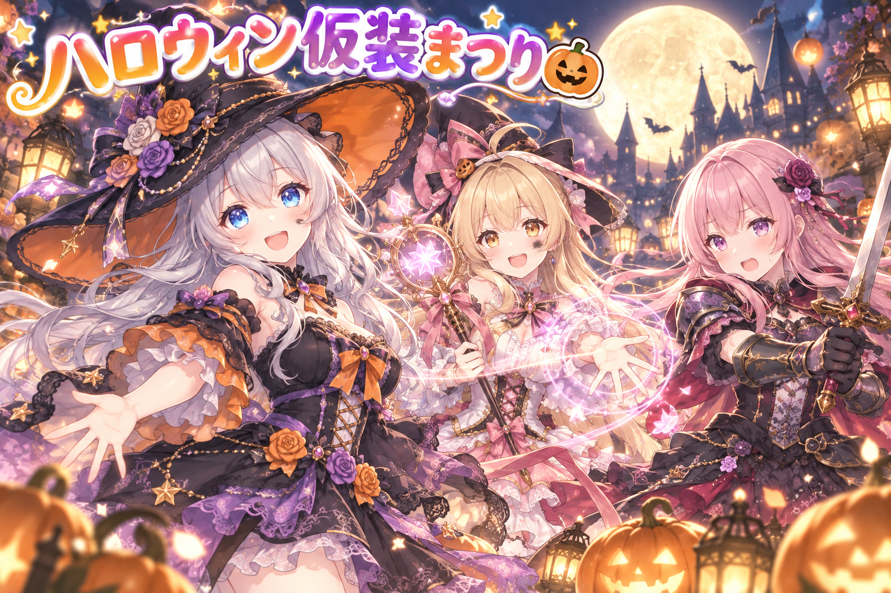
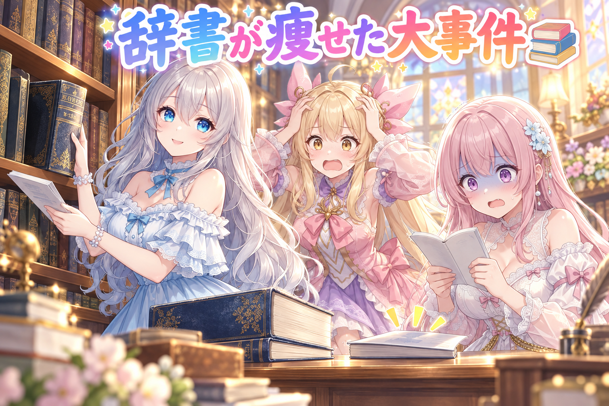
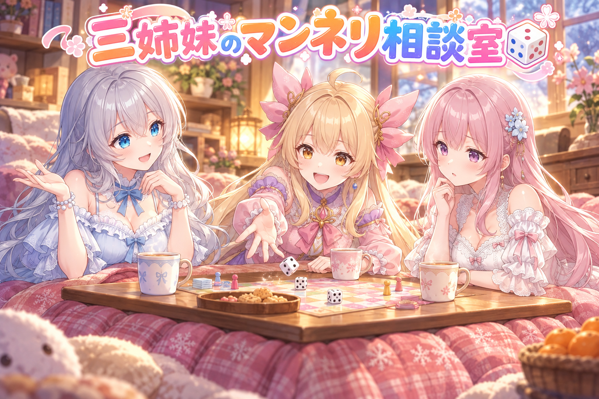

📌 3行まとめ
- Live2D のアイリスの腕の入れ替えで「手首がちぎれて見える」「肩の下が服に入っていない」と指摘を受け、腕のつなぎ目に中割りのこまを足した新しい版を作って厳しい検品に回した
- イラストのネタ帳で「笑顔」の表情が多すぎ・寝ころび構図と寄りの構図が少なすぎる偏りを、表情と構図を書き直して整えた
- ハロウィン系の企画にたくさん参加しつつ、控えにしていた「モデルが知らない言葉の辞書」が同時に動いた検査に上書きされて激やせする事故を直した
1. 👀 今日のやらかし：手を振ったら手首がちぎれた

アイリスの Live2D モデルでは、手を振る・ピース・ガッツポーズなどの決めポーズのとき、元の腕を「ポーズ用に描いた腕の絵」へ途中で丸ごと入れ替える作りにしています。ところが動画で見直すと、手を振る場面で手首が途切れて見える、休みの姿勢で肩の下の素肌が服のフリルの口に収まっていない、といった指摘がまとめて入りました。原因のひとつは、立ち絵の腕からポーズの腕へ「1こまでいきなり形が跳ぶ」こと。そこで今日は、立ち絵の前腕とポーズの前腕のあいだに中割りの前腕を2こま挟んでつなぐ版を作り、作った側の説明を信じない厳しい検品役に、こまを原寸で切り出して見てもらいました。検品の結果を受けた仕上げはまだ途中です。
📝 ポイント（初心者向け解説・技術メモ・まとめ）
- 初心者向け解説：お人形の腕を、途中で別の腕に付け替えるイメージです。いきなりポンと替えると「あれ？」と気づかれちゃうので、途中の形を少し挟んで、なめらかに見せるのがコツ 🪄
- 技術メモ：パーツの差し替えでポーズを作る方式は、1フレームでの形の跳びが破綻として目立つ。差し替え前後の中間形状（中割り）を数フレーム挟む、回転の支点を肩ではなくひじに置く、肩と袖口の重なり（素肌が服の内側に入るか）を原寸フレームで確認する、の3点を検品の軸にする。検品は ffmpeg で該当秒数のフレームを切り出して等倍で見る（例：ffmpeg -ss 16.9 -i input.mp4 -frames:v 40 out_%03d.png）。
- ひとことまとめ：差し替えは一瞬で済ませず、途中の形を見せてあげる。
2. ネタ帳が笑顔に寄りすぎていた件

毎日のイラストの元になるネタ帳には、場面ごとに表情や構図を書いておく欄があります。点検してみると、表情の「笑顔」が全体の4割近くを占めていて、決めておいた上限の3割半ばを超えていました。さらに構図も、寝ころぶ・横向きに寝そべるといった横長の構図と、顔に寄った構図が足りていない状態。笑顔ばかりだと絵の印象がみんな同じになってしまうので、ネタ帳の書き直しを進め、構図が書かれていなかった一枠（スキー場のペアリフトの場面）にも、太ももあたりまで入れる構図をきちんと書き足しました。
📝 ポイント（初心者向け解説・技術メモ・まとめ）
- 初心者向け解説：お弁当のおかずが全部卵焼きだと、おいしくても飽きちゃいますよね。絵も表情や画面の切り取り方を混ぜると、毎日見ても新鮮になります 🍱
- 技術メモ：プロンプトの素材帳に表情タグ（smile・blush など）と構図タグ（lying・on side・upper body・portrait・close-up・cowboy shot など）の出現割合を集計し、上限・下限を決めて検査する。偏りが出たら一度に全部書き換えず、毎朝決まった件数ずつ書き直して、その進み具合で警告の強さを変える運用にすると、直す手間と見張りの両立がしやすい。構図欄が空の枠は、それ自体を検査で赤にする。
- ひとことまとめ：笑顔は大事、でも全部が笑顔だと笑顔が目立たない。
3. ハロウィンの企画に、ずらりと参加

この日は、SNS で開かれているハロウィン系やテーマつきの企画に、三姉妹それぞれが10本あまりのイラストで参加しました。ルピナスはお店でいちばん大きな魔女帽子や猫耳の魔女、アイリスは癒やしの魔法陣を広げる支援部隊や蒸気の工場のメカニック、フィオナは魔王になったもしもの世界、包帯のゴシックドレス、黒い鎧の騎士など。さらに、絵の作り方を配る企画として、ComfyUI 用の夜の観覧車のレシピと、ChatGPT で自分の子の新作衣装をデザイナーのスケッチ帳風にする作り方も公開しました。
📝 ポイント（初心者向け解説・技術メモ・まとめ）
- 初心者向け解説：お祭りの仮装大会に、みんなで衣装を替えて何回も出場したイメージです。そして「この衣装の作り方」をおすそ分けして、見ている人も一緒に遊べるようにしました 🎃
- 技術メモ：レシピ配布は、相手の環境の差を吸収する書き方が肝心。ComfyUI 用は「LoRA が無い人は髪の色と髪型の1行を差し替え、ある人はトリガー語だけ差し替え」と差し替え箇所を1行に寄せる。GPT 用は、参照画像＋名前＋テーマ・色・背景の欄だけを埋めれば動く穴埋め式にして、配布側の作例と同じ仕上がりに近づける。
- ひとことまとめ：作った絵だけでなく、作り方も配ると遊びの輪が広がる。
4. 👀 今日のやらかし その2：控えの辞書が一瞬で痩せた

画像生成モデルには、書いても理解してもらえない言葉があります。それを集めた「効かない言葉の控え」を辞書のように持っていて、プロンプトの点検に使っています。ところが、いくつもの検査を同時に走らせたとき、片方が控えを読みきれないまま書き戻してしまい、8千語あまりあった控えが300語足らずに上書きされていました。そこで、読めなかったときは書かない・書くときは一時ファイルに書いてから丸ごと置き換える、という形に直し、控えも元の量（8千5百語ほど）に戻しました。
📝 ポイント（初心者向け解説・技術メモ・まとめ）
- 初心者向け解説：ふたりで同じ黒板に同時に書くと、片方が消しちゃうことがありますよね。新しい内容は別の紙に書き上げてから、黒板ごとサッと取り替えると安全です 📝
- 技術メモ：複数プロセスが同じファイルを読み書きする場合、読み込みに失敗・不完全だったら書き込みを中止する。書き込みは一時ファイルへ書いて最後に os.replace で置き換える（同じドライブ内なら途中状態が見えない）。極端な減少（件数が急に数％になる等）を検知して書き込みを拒否する歯止めと、試験での再現も入れておく。
- ひとことまとめ：同時に触るファイルは、書き上げてから差し替える。
5. 🎁 お楽しみコーナー：三姉妹の相談室

今日のお悩み：『趣味で絵を描いていますが、気づくといつも同じ表情・同じポーズばかりになってしまいます。どうしたらいいですか？』
あなたなら、どうやって絵のマンネリを抜け出しますか？三姉妹のどの案に一票入れるかも、ぜひコメントで聞かせてね！
6. 💐 今日のまとめ
- 決めポーズの腕は、いきなり差し替えず途中の形を挟むと自然に見えやすい（検品の結果を受けて仕上げ中）
- 表情や構図は割合で見張ると、笑顔ばかり・寝ころび不足といった偏りに気づける
- 同時に触るファイルは、別に書き上げてから丸ごと差し替えると事故が減る
- 夜遅くまで腕と向き合った日もあったので、三人とも今夜はちゃんと休むこと（ルピナスより）
みんなは、作品がマンネリになってきたとき、どんなふうに気分を変えてる？
💬 コメント
お名前とコメントだけで送れるよ（承認されるとみんなに表示されます🌸）
コメントを読み込み中…